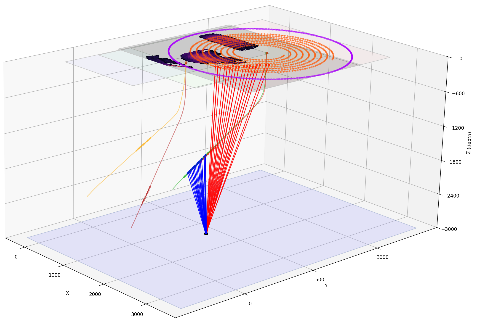
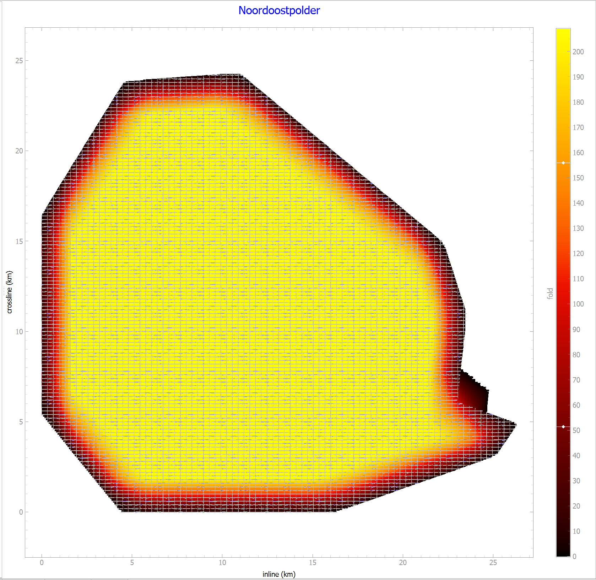

User Guide¶
Overview¶
Roll is built around designing a survey first and analyzing it second. The plugin supports both template-driven survey design and geometry-driven processing based on imported SPS data.
At a high level, Roll lets you:
create or load a survey project;
define blocks, templates, seeds, patterns, and roll along behavior;
generate geometry and run binning analysis;
inspect analysis outputs inside Roll; and
export geometry and raster outputs to QGIS.
Prerequisites¶
Roll runs inside QGIS and expects its optional Python dependencies to be installed in the QGIS Python environment, typically from the OSGeo4W shell on Windows.
Install dependencies from the OSGeo4W command shell with commands such as
python -m pip install --upgrade package-name.
Important optional dependencies include:
debugpyfor debugging GUI and worker-thread code;numbato accelerate numeric kernels;numpyfor numeric array processing;pyqtgraphfor plotting and interactive visualization;rasteriofor GeoTIFF export; andwellpathpyfor well trajectory support.
When upgrading QGIS across Python major versions, these dependencies may need to be installed again in the new QGIS Python environment.
Core Concepts¶
Roll uses a small set of domain concepts throughout the UI and file format.
- Block
A survey consists of one or more rectangular blocks.
- Template
Each block contains one or more templates. A template describes how sources and receivers are arranged before rolling.
- Seed
A seed is the starting location of a source or receiver definition.
- Grow list
Each seed can be grown in up to three steps. These growth steps turn a point into a line, a line into a grid, and a grid into a repeated pattern.
- Roll list
Each template can be rolled in up to three directions to repeat the template over the survey area.
- Template versus geometry
Template-based processing keeps the compact survey definition. Geometry-based processing expands that definition into actual source and receiver positions. Receiver positions may repeat across templates, so relation data is used to preserve which receivers were active for each shot.
Within a template, all active sources shoot into all active receivers in that template. Additional source and receiver seeds can be added where needed.
Project files and outputs¶
Roll project files use the .roll XML format. The project stores the survey
hierarchy and CRS information, including the CRS as WKT on the XML root.
Analysis outputs are stored alongside the project through sidecar files. Full binning uses a named memory-mapped analysis file so large trace datasets can be worked with incrementally instead of being loaded fully into memory.
The template-based survey hierarchy is reflected in the XML project structure.
<block_list>
<block>
<name>Block-1</name>
<borders>
<src_border xmin="-20000.0" xmax="20000.0" ymin="-20000.0" ymax="20000.0"/>
<rec_border xmin="0.0" xmax="0.0" ymin="0.0" ymax="0.0"/>
</borders>
<template_list>
<template>
<name>Template-1</name>
<roll_list>
<translate n="10" dx="0.0" dy="200.0"/>
<translate n="10" dx="250.0" dy="0.0"/>
</roll_list>
<seed_list>
<seed x0="5975.0" src="True" y0="625.0" argb="#77ff0000" typno="0" azi="False" patno="0">
<name>Src-1</name>
<grow_list>
<translate n="1" dx="250.0" dy="0.0"/>
<translate n="4" dx="0.0" dy="50.0"/>
</grow_list>
</seed>
<seed x0="0.0" src="False" y0="0.0" argb="#7700b0f0" typno="0" azi="False" patno="1">
<name>Rec-1</name>
<grow_list>
<translate n="8" dx="0.0" dy="200.0"/>
<translate n="240" dx="50.0" dy="0.0"/>
</grow_list>
</seed>
</seed_list>
</template>
</template_list>
</block>
</block_list>
Main Outputs¶
Depending on the workflow and the chosen processing mode, Roll can produce:
fold maps;
minimum and maximum offset maps;
RMS offset increment and maximum offset gap maps;
spider plots for individual bins;
trace-table views backed by analysis files; and
georeferenced raster exports for use in QGIS.
Full binning extends the basic outputs with detailed per-trace information such as line and stake numbers, source and receiver coordinates, CMP coordinates, travel time, offset, azimuth, and unique-fold related values.
Analysis plots available in the main application include:
inline and crossline offset displays;
inline and crossline azimuth displays;
inline and crossline stack-response views;
single-bin
Kxystack response; andoffset and offset-azimuth histograms.
3D View¶
Roll includes a 3D view for a subset of the survey layout. This is especially useful for dipping-plane surveys, well trajectories, and VSP-style geometry. Rolling templates are too expensive to render fully in 3D, so the view focuses on non-rolling seeds and related geometry that are most useful to inspect.

3D representation of a survey area.¶
Survey Wizards¶
Roll provides separate wizards for land and marine survey design.
The land wizard supports several survey families:
orthogonal
parallel
slanted
brick
zigzag
The marine wizard is specialized for towed-streamer acquisition. It accounts for turning-radius constraints and race-track style acquisition planning when constructing practical survey layouts.
Importing SPS Data¶
Legacy SPS data can be imported through the file menu and processed in much the same way as internally generated geometry files.
Roll ships with predefined SPS dialects and also allows users to define and store additional dialects by adjusting columns such as line number, point number, northing, and easting. This makes the plugin useful both for survey design and for QC or re-analysis of existing acquisition data.
Editing Survey Files¶
Roll helps users avoid direct XML editing in most cases.
New projects can be created with the land or marine survey wizard.
Existing project content can be modified in the property pane, which updates the XML structure behind the scenes.
Advanced users can still edit the XML directly and apply those changes through the refresh-document action.
Interaction with QGIS¶
Generated geometry, imported SPS data, and raster analysis products can all be exported to QGIS. In QGIS, source and receiver points can be moved, deleted, or marked inactive and then loaded back into Roll for renewed analysis.

Fold map of the Noordoostpolder example project.¶